Ever since 1970, when Mother Earth News was founded, readers have been writing in with questions about homesteading and stories about their own experiences with rural living. We get calls and e-mails every week confirming that thousands of Americans still dream of going “back to the land” to learn to grow their own food, build their own homes, generate electricity from renewable sources and live a self-reliant lifestyle.
Often, people ask us “What should I do first? How can I learn what I need to know?” To answer these questions, we’ve gathered advice from people with decades of experience with different kinds of homestead living. Many of their suggestions are included in these pages, and you can read the entire discussion online in our Homesteading forum.
Although many people dream of buying several acres in the country, you can start homesteading wherever you are. Heidi Hunt, an assistant editor at Mother Earth News, frequently talks to readers who are considering buying land in the country. Hunt homesteaded on a farm in northeastern Washington, where she built a cabin, gardened and spent many hours chopping wood. She says she always recommends learning as many homesteading skills as possible before moving. “Planting, harvesting and preserving food are skills that can be practiced almost anywhere,” Hunt says.
In fact, many aspects of homesteading work as well in the city or suburbs as in the country. Solar panels, straw bale building, wood heat and collecting rainwater are all possible in the city or suburbs, and even raising chickens is allowed in many cities. Just be careful to check all relevant zoning and local ordinances before you get started.
Whatever your homesteading plans, Hunt says it’s important to focus on your priorities. Decide which parts of the dream are most important to you. “Then, do your research,” she says. “Learn the skills and find out what’s involved. Each new homesteading activity requires new tools and skills, as well as a certain amount of money and energy.”
Some of these activities require more money and time than others - another reason why it’s a good idea to start with smaller projects, such as learning to garden before buying farmland, or doing some basic home repairs before deciding to build your own home. If you pursue larger projects, there are many ways to learn more about your interests. For potential farmers, apprenticeships and volunteer opportunities on organic farms can be invaluable. Renewable energy workshops around the country help people learn about small-scale solar or wind power. To learn about building, options range from volunteering with Habitat for Humanity to attending straw bale building parties and natural building workshops.
For many people, the homesteading dream is to buy a few acres and earn a living from their land. There are hundreds of ways to generate income: conventional or organic farming, market gardening, raising seed crops, operating a bed and breakfast, and selling homemade products ranging from goat cheese to hand-crafted furniture. The challenge is to create a stable market for your products or services. Earning a living can be a challenge, no matter how much you economize. Many farm families make it work by having at least one partner hold a traditional job with benefits.
Ed Smith lives in Marshfield, Vt., where he has worked as a carpenter and cabinetmaker, taught college and written a book, The Vegetable Gardener’s Bible. “We grow a lot of our food, cut our own firewood, built all of our buildings ourselves and maintain most of our machines,” he says. “And there is no way we could have done this without some semi-steady outside income.”
Computers and the Internet are making it much easier to work at a traditional job from home, or to market the products your homestead produces online. “In my experience, you need to serve more than the local market if you want to thrive in the country,” says Steve Maxwell, who lives in a stone house he and his wife built by hand on Manitoulin Island in Ontario, Canada.
Maxwell says most rural markets already are saturated with all the goods and services they need, but you can reach larger markets with a Web site, e-mail, phone and fax machine. “Identify some highly valued commodity - either physical or intellectual - that can be easily exported to places where the money exists, then go to it,” Maxwell says. He earns much of his income by writing for woodworking magazines, but he says the possibilities are endless.
Another good example of this homesteading strategy is the business run by David Schafer and Alice Dobbs, who sell grass-fed meat from their farm in northern Missouri. “We had an Internet presence with our meats from the start, and about 25 percent of our business was mail-order,” Schafer says.
Roberta Bailey of Vassalboro, Maine, says another good farming strategy is to sell a variety of products. She earns a large part of her income by working for Fedco Seeds, but she has a variety of profitable homestead enterprises including selling organic fruit and juice from her farm’s orchard; raising seed crops; and selling meat, yarn, felt and high-quality fleece from her flock of sheep. “If one market or crop fails, it is balanced out by another’s success,” Bailey says. “Plus it keeps life interesting.”
When purchasing a house and land, ask all the usual questions you would when buying any house. But homesteading may introduce other considerations, such as:
• How rich is the soil, and how long is the growing season?
• Does the property provide adequate pasture and water for livestock? Will you need to build a barn?
• Will you be able to harvest firewood from your land?
• Is there a nearby farmer’s market? Do the roads near the house get enough traffic to sell products from home?
Defining your priorities before buying land is crucial to homesteading success. And even if you have a clear idea of what you want and where you plan to settle, take your time before committing to a specific piece of land.
“You may live in a community three or four years before you know enough about the town, the land and your own habits to be sure which location is best,” says Bryan Welch, publisher of Mother Earth News. Welch lives on a 50-acre farm outside of Lawrence, Kan., with his wife, Carolyn. When looking for land, they knew they needed a large pasture because they were interested in grass-fed livestock, but everyone’s needs are different.
“We’ve lived in nine states, so we’ve looked at this puzzle from a number of different angles,” Welch says. “I’ve witnessed the disillusionment that occurs when a family that planned to raise vegetables as a cash crop discovers they’ve chosen a mountain town with an 80-day growing season.
“Obviously, homesteaders should pick a place they like. But they also need to make sure that their planned crops and animals will be compatible with the local environment.”
When deciding how much land you need, keep an open mind, says George DeVault, a farmer in Emmaus, Pa. “Forget about absolutely having to have a certain number of acres,” DeVault says. “There was once a book called Ten Acres Enough by Edmund Morris. A few years later, R.B. Roosevelt wrote a book called Five Acres Too Much.”
With today’s intensive cultivation methods such as raised beds and greenhouses, many homesteaders are able to grow most of their own food on less than an acre. That can work in an urban area, and even better, in a small town where property values are lower. Find an inexpensive house on a double lot, and you may be in business. Another strategy is to purchase land, but avoid a big mortgage by building and living in a simple cabin until you’re ready to build a house. “I bought my first piece of land - 28 acres for $350 an acre - about an hour into the countryside from Portland, Maine, where I lived,” says Scott Vlaun, a writer and photographer, who still lives on the property with his wife, Zizi. “I built a small cabin there from fir poles, green hemlock and recycled windows for $500.” Steve Maxwell followed a similar strategy in Ontario, where he and his wife, Mary, built and lived in a small cabin while building their house.
If you do want several acres in the country and cannot afford to buy land outright, consider renting. Many farmers rent at least part of the land they farm, and if you are fortunate enough to find an older farm that someone wants to see revived, you may be able to negotiate a longer lease at a lower rate.
One of the biggest decisions for homesteaders is selecting the home itself. For those interested in green building, this can be a difficult decision: Is it better to build a new, energy-efficient home or to renovate an older house?
Both choices have their advantages, but as far as David Schafer is concerned, building a new, greener home was the only option. “If resources allow it, I would strongly recommend starting from scratch and avoiding the temptation of leaving bad designs in place,” he says. Schafer and Dobbs moved out of a drafty, century-old farmhouse and built a new house using the latest green-building techniques. “We built our own home based on what the farmhouse was not,” David says. “Our new home is tightly insulated and almost maintenance-free. It does not require lots of energy to heat and cool.”
The couple’s new house uses a combination of straw bales and exterior stone to create a well-insulated home. It also has many passive-solar design features, plus solar-electric panels, a rainwater harvesting system to collect cistern water and a bicycle-powered pump to pressurize water in the house.
Harvey Ussery in Hume, Va., made the opposite decision, falling in love with a 200-year-old farmhouse. Although most older homes are not as tightly built or well insulated as newer ones, Ussery says, the house is better than you might expect. “Our 10 inches of solid wood and chinking is actually pretty green - that’s a lot of insulating power,” he says.
For Ussery, part of the farmhouse’s appeal is the sense of history it gives him. “I came to love this house in March ’93,” he says. “A raging winter storm blew in. The electric power went down immediately.” As he sat next to the woodstove, Ussery says he felt a strong connection to all those who had braved winter storms in the house before him.
You can’t turn an older farmhouse into the home of your dreams without a sizeable investment of time, money and energy. Ussery says he and his wife have redone every single room over the past two decades and completed a major addition on the second level. He says he’s not a skilled handyman, but he’s been able to do quite a bit of the work himself. “In many cases I’ve hired out the more skilled work, and finished up with things like sanding and painting,” Ussery says.
Whether you choose to renovate an older home or start from scratch, Ussery says you’ll be happier if you stay involved in the process. “It is crucial that you be in charge of the planning and design, and that you oversee every step in the execution,” Ussery says. “No outsider will know your habits and living patterns like you do.”
He also advises against building cheap; if you take on a project, be ready to spend what you must for good-quality materials and workmanship. “When we did the addition, we took the opportunity to re-side the entire house,” Ussery says. “It was a huge additional expense, but when the wind blows, I know it was money well spent.”
For many people, the ideal self-sufficient life includes generating all their electricity from renewable resources. “We wanted to sever our fossil-fuel dependency and adopt renewable energy to meet 100 percent of the homestead’s energy needs,” says John Ivanko of Browntown, Wis. Ivanko and his wife, Lisa Kivirist, live in a century-old farmhouse. They use an EPA-certified woodstove as their primary heat source and get their electricity from a home-scale wind turbine.
Ivanko explains that their first step was to reduce their energy use, so that a smaller, less expensive wind energy system would meet their electricity needs. To do that, they replaced all the light bulbs in their house with compact fluorescent bulbs and switched to EnergyStar-rated appliances, which use significantly less energy. In 2003, they installed a 10 kW Bergey wind turbine.
Home-scale wind power can easily provide enough power for users to be completely independent of fossil fuel-produced electricity, but it requires a large upfront investment. Such systems can take as long as 15 to 20 years to pay off the initial costs, but it can take much less time depending on the energy incentives that are available in each state. A complete list of state incentives is at www.dsireusa.org. For those seeking a quicker return on their investment, Ivanko and Kivirist recommend solar water-heating systems. Such systems can provide all the hot water a household needs, and in states such as Wisconsin, which offer renewable energy incentives, they can pay for themselves in as little as three years.
Ed Smith, who lives in northern Vermont, says he considered wind for electricity, but ultimately decided on solar energy (more than 25 years ago). He installed 20 35-watt panels to power his house and has been happy with his choice. “The panels still put out their rated amps. The only expense has been batteries every five or so years,” Smith says.
Keeping the system working hasn’t been difficult, Smith says; he learned most of what he needed to know from catalogs and the rest from books. Although his solar panels produce enough electricity to supply power to his home, he does use an old gas generator to provide supplemental electricity for the tools in his woodworking shop, and he has a backup propane generator for the house. He also heats with wood in a masonry furnace.
Many homesteaders heat with wood, a renewable resource that is readily available in most parts of the United States and Canada. Wood-burning stoves have become cleaner and more efficient in the past few years, so if you are purchasing a new woodstove, be sure to look for a recent, EPA-certified model. Any woodstove can heat a home, provided the stove is an appropriate size for the building and the house has an open design and good insulation.
“It can be zero outside, yet we heat our entire house with just the woodstove in our living room,” says DeVault. His stove is a large Consolidated Dutchwest airtight with a catalytic converter. “One of my greatest joys after working outside for a few hours in winter is to stretch out on the floor in front of the blazing stove and take a nice, long nap,” he says.
No matter how extensive the plans for your homestead, the most important thing to remember is that it doesn’t need to happen all at once. Start with a small garden, a few chickens or a small home-repair or building project, and let your plans evolve based on those experiences.
And don’t neglect one of the most important aspects of your homestead - building community. Experienced homesteaders always come back to the importance of being part of a community of like-minded people they can turn to for advice and support. The homesteading life is simply much richer and more rewarding with a strong community of friends and neighbors. Among those who share a passion for gardening, renewable energy, green building and the like, those connections are easily forged.
If you’re planting your first garden, consider these 10 crops. All are easy to grow, and this combination offers lots of possibilities for cooking. Some of these plants can be started from seeds, but most are easier to grow if you start by purchasing seedlings.
Radishes. Radishes do well even in not-so-great garden soil and are ready to harvest in only a few weeks. Plant the seeds in spring and fall.
Salad greens (lettuce, spinach, arugula or corn salad). Pick your favorite, or try a mix - many seed companies sell mixed packets for summer and winter gardening. Plant the seeds in spring and fall, and you can pick salads almost year-round.
Green beans. Easy to grow and prolific. If you get a big crop, they freeze well, and they're also delicious when pickled as “dilly beans.” Start with seeds after danger of frost has passed.
Onions. Start with small plants, and if they do well, you can harvest bulb onions. If not, you can always eat the greens.
Strawberries. Perfectly ripe strawberries are unbelievably sweet, and the plants are surprisingly hardy. Just be sure to put this perennial in a sunny spot and keep it well weeded.
Peppers. Both hot peppers and bell peppers are easy to grow. Start with plants and let peppers from the same plant ripen for different lengths of time to get a range of colors and flavors.
Bush zucchini. This squash won’t take up as much room in your garden as many other types, and it’s very prolific. It’s easiest to start from plants, and you won’t need more than a few.
Tomatoes. There’s just no substitute for a perfectly ripe tomato, and it’s hard to go wrong when you start from plants. If you get a big crop, consider canning or freezing.
Basil. Many herbs are easy to grow, but basil is a good choice because it’s a nice complement to tomatoes. Basil is easy to grow from seeds or from transplants.
Potatoes. An easy-to-grow staple that stores well when kept cool. A simple and low-maintenance approach is to plant potatoes in straw rather than soil.
You can read the entire homesteading discussion on our Web site at www.MotherEarthNews.com/forums and post your own questions for our homesteading experts.
Roberta Bailey lives in Maine, where she has built 20 log houses and has been farming on a small scale for 28 years. She dabbles in plant breeding, sells seed crops and helps run Fedco Seeds.
George DeVault and his wife, Melanie, are writers and market gardeners in Emmaus, Penn. For the April/May 2006 issue, George has written about farm ponds and fish farming.
Heidi Hunt lived on an 80-acre farm north of Spokane, Wash., before moving to Topeka, Kan., where she is an assistant editor at Mother Earth News.
John Ivanko and Lisa Kivirist are organic growers, own a bed and breakfast on their five-acre property in Wisconsin, and are the authors of Rural Renaissance. Reach them at www.innserendipity.com.
John Stuart and Carol Mack live and homestead on 40 acres of forest in northeast Washington state where they built a vertical log home and raise much of their own food.
Steve Maxwell is a writer from Ontario, Can., who lives in a stone house that he and his wife, Mary, built by hand.
David Schafer farms in northern Missouri and is the author of Just the Greatest Life. He and his wife, Alice, sell natural meats from their Web site.
Ed Smith is the author of The Vegetable Gardener’s Bible. Ed and Sylvia homestead in Marshfield, Vt. Their home is heated with wood and powered with solar energy.
Harvey Ussery is retired from the postal service. He and Ellen live on a Virginia farm where Harvey offers a Poultry 101 seminar. His Web site is www.themodernhomestead.us/poultry.html.
Scott Vlaun is a writer and photographer who lives on 50 acres in Maine with his wife, Zizi. They are currently building their own home.
Bryan Welch is the publisher of Mother Earth News and lives on a 50-acre farm outside of Lawrence, Kan., where he and his wife, Carolyn, have a large garden, 40 free-range chickens and grass-fed cattle, goats and sheep.
•The Encyclopedia of Country Living, by Carla Emery
•The Have-More Plan, by Ed and Carolyn Robinson
•Living on an Acre, by the U.S. Department of Agriculture
•The Natural House, by Dan Chiras
•Renovation: A Complete Guide, by Michael Litchfield
•The Solar-Electric House, by Steve Strong
•Wind Energy Basics, by Paul Gipe
•The Good Life, by Helen and Scott Nearing
•Just the Greatest Life, by David Schafer
•Rural Renaissance, By John Ivanko and Lisa Kivirist
•All Flesh is Grass, by Gene Logsdon
•Barnyard in your Backyard, by Gail Damerow
•The Big Book of Preserving the Harvest, by Carol W. Costenbader
•Four Season Harvest, by Eliot Coleman
•Vegetable Gardener's Bible, by Ed Smith
•You Can Farm, by Joel Salatin
|
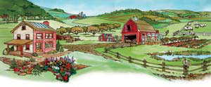 FRANK FRETZ Turn your dreams of country living into reality. |
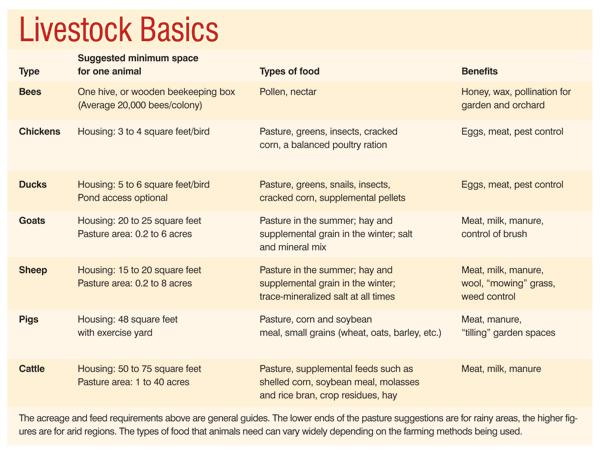 TATJANA ALVEGAARD David Schafer and Alice Dobbs’ house in northern Missouri is a combination of stone and straw bale, with many other green features, including solar power. |
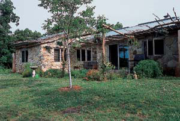 JOHN IVANKO Look for a homestead that’s the right size for your needs. |
|
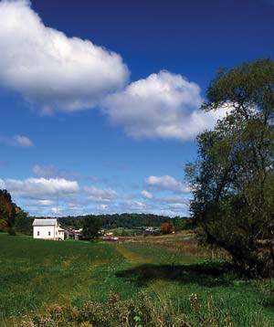 BRYAN WELCH Raise a few chickens on your homestead and enjoy the freshest free-range eggs. |
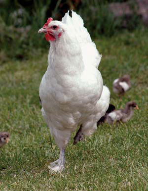 JOHN IVANKO It’s easy to teach children to love gardening. And they’re much more likely to enjoy the food they helped grow. |
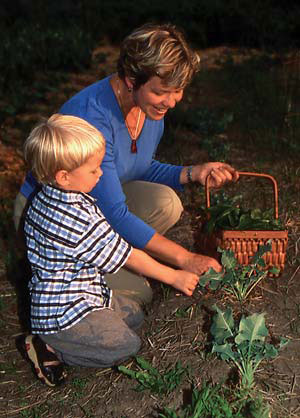 ROGER YIP Scott Vlaun is a writer and photographer who lives on 50 acres in Maine with his wife, Zizi. They are currently building their own home. |
|
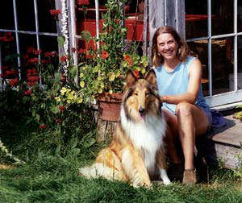 STOREY PUBLICATIONS George DeVault and his wife, Melanie, are writers and market gardeners in Emmaus, Penn. For the April/May 2006 issue, George has written about farm ponds and fish farming. |
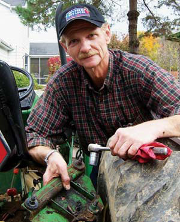 Heidi Hunt lived on an 80-acre farm north of Spokane, Wash., before moving to Topeka, Kan., where she is an assistant editor at Mother Earth News. |
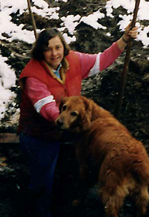 John Ivanko and Lisa Kivirist are organic growers, own a bed and breakfast on their five-acre property in Wisconsin, and are the authors of Rural Renaissance. Reach them at http://www.innserendipity.com. |
|
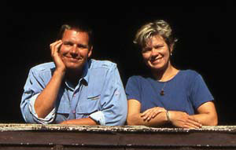 John Stuart and Carol Mack live and homestead on 40 acres of forest in northeast Washington state where they built a vertical log home and raise much of their own food. |
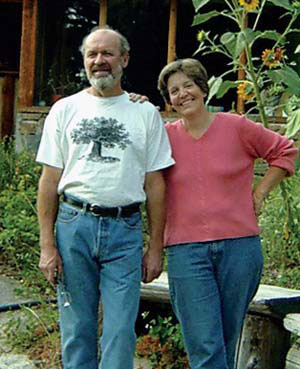 Steve Maxwell is a writer from Ontario, Can., who lives in a stone house that he and his wife, Mary, built by hand. |
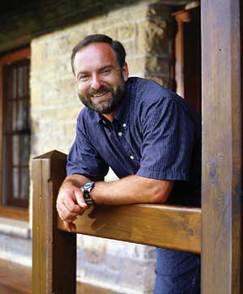 David Schafer farms in northern Missouri and is the author of Just the Greatest Life. He and his wife, Alice, sell natural meats from their Web site http://www.schaferfarmsnaturalmeats.com. |
|
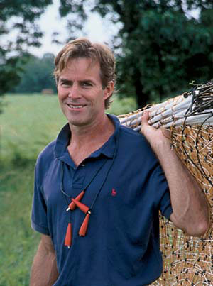 Ed Smith is the author of The Vegetable Gardener’s Bible. Ed and Sylvia homestead in Marshfield, Vt. Their home is heated with wood and powered with solar energy. |
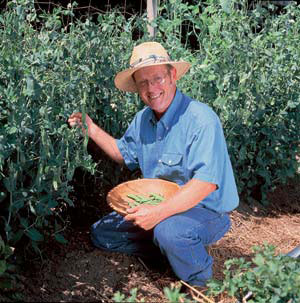 Harvey Ussery is retired from the postal service. He and Ellen live on a Virginia farm where Harvey offers a Poultry 101 seminar. His Web site is http://www.themodernhomestead.us/poultry.html. |
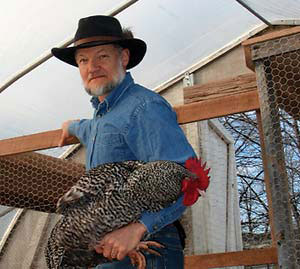 |
|
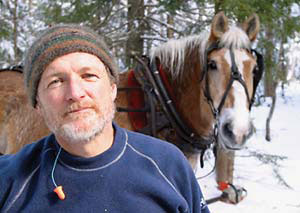 Bryan Welch is the publisher of Mother Earth News and lives on a 50-acre farm outside of Lawrence, Kan., where he and his wife, Carolyn, have a large garden, 40 free-range chickens and grass-fed cattle, goats and sheep. |
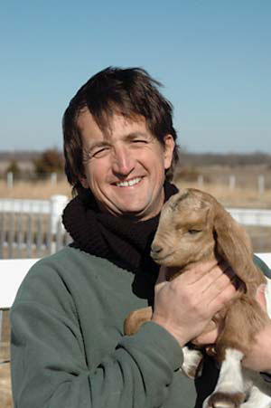 |
|